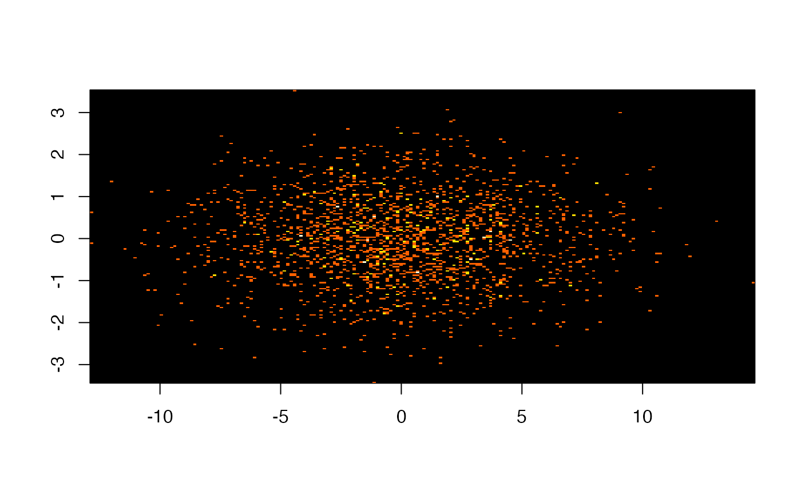
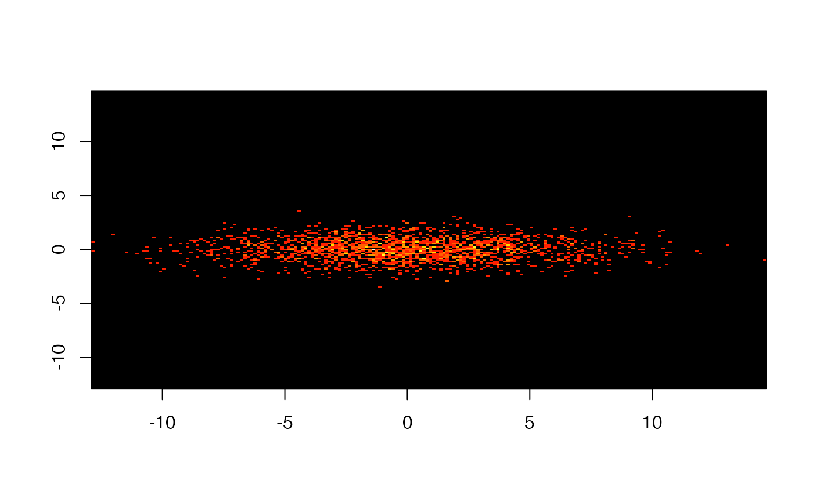
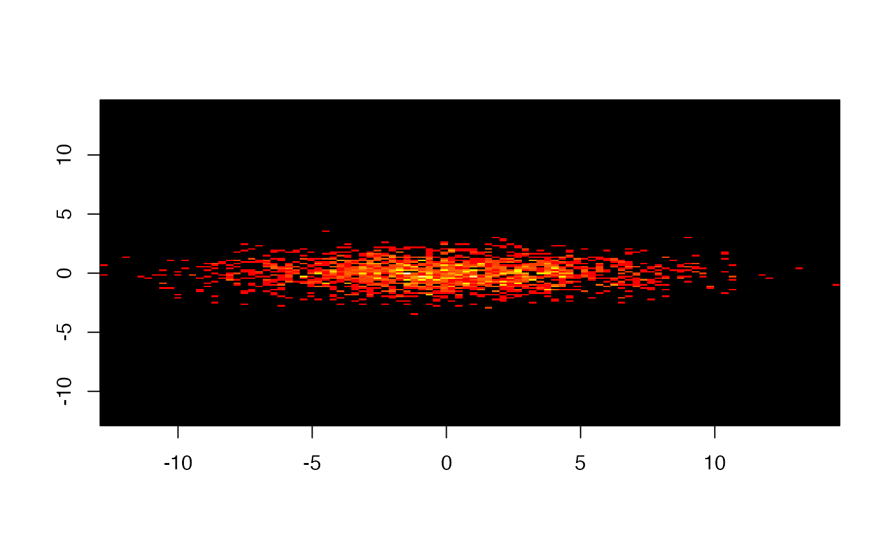
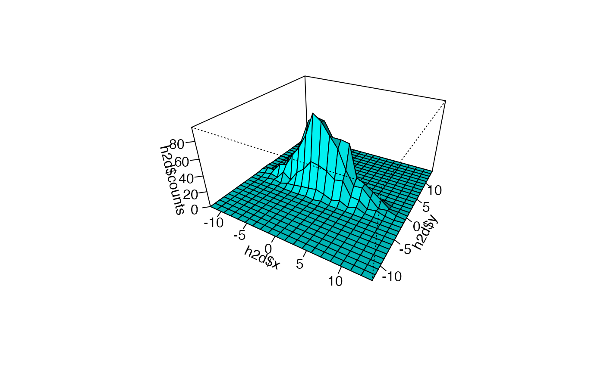
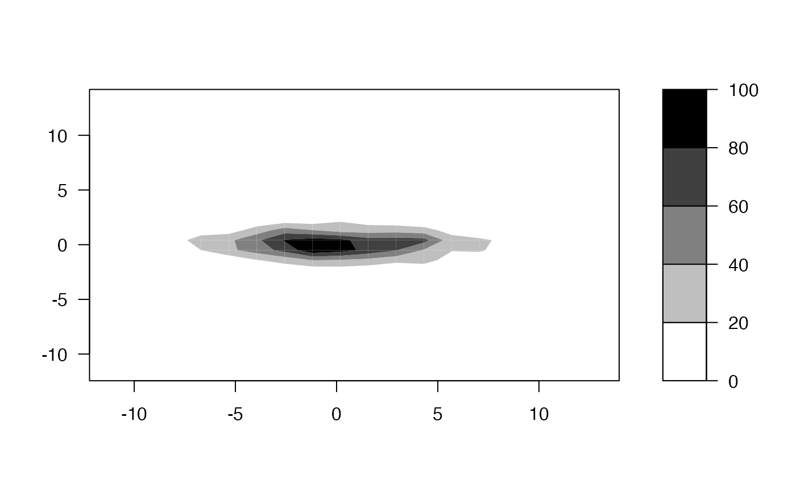

hist2d.RdCompute and plot a 2-dimensional histogram.
hist2d(x,y=NULL, nbins=200, same.scale=FALSE, na.rm=TRUE, show=TRUE, col=c("black", heat.colors(12)), FUN=base::length, xlab, ylab, ... ) # S3 method for hist2d print(x, ...)
| x | either a vector containing the x coordinates or a matrix with 2 columns. |
|---|---|
| y | a vector contianing the y coordinates, not required if `x' is matrix |
| nbins | number of bins in each dimension. May be a scalar or a 2 element vector. Defaults to 200. |
| same.scale | use the same range for x and y. Defaults to FALSE. |
| na.rm | Indicates whether missing values should be removed. Defaults to TRUE. |
| show | Indicates whether the histogram be displayed using
|
| col | Colors for the histogram. Defaults to "black" for bins containing no elements, a set of 16 heat colors for other bins. |
| FUN | Function used to summarize bin contents. Defaults to
|
| xlab,ylab | (Optional) x and y axis labels |
| ... | Parameters passed to the image function. |
This fucntion creates a 2-dimensional histogram by cutting the x and
y dimensions into nbins sections. A 2-dimensional matrix is
then constucted which holds the counts of the number of observed (x,y) pairs
that fall into each bin. If show=TRUE, this matrix is then
then passed to image for display.
A list containing 5 elements:
Matrix containing the number of points falling into each bin
Lower and upper limits of each bin
midpoints of each bin
## example data, bivariate normal, no correlation x <- rnorm(2000, sd=4) y <- rnorm(2000, sd=1) ## separate scales for each axis, this looks circular hist2d(x,y)#> #> ---------------------------- #> 2-D Histogram Object #> ---------------------------- #> #> Call: hist2d(x = x, y = y) #> #> Number of data points: 2000 #> Number of grid bins: 200 x 200 #> X range: ( -14.92637 , 14.70893 ) #> Y range: ( -3.696944 , 3.068337 ) #>## same scale for each axis, this looks oval hist2d(x,y, same.scale=TRUE)#> #> ---------------------------- #> 2-D Histogram Object #> ---------------------------- #> #> Call: hist2d(x = x, y = y, same.scale = TRUE) #> #> Number of data points: 2000 #> Number of grid bins: 200 x 200 #> X range: ( -14.92637 , 14.70893 ) #> Y range: ( -14.92637 , 14.70893 ) #>#> #> ---------------------------- #> 2-D Histogram Object #> ---------------------------- #> #> Call: hist2d(x = x, y = y, nbins = c(100, 200), same.scale = TRUE) #> #> Number of data points: 2000 #> Number of grid bins: 100 x 200 #> X range: ( -14.92637 , 14.70893 ) #> Y range: ( -14.92637 , 14.70893 ) #>## use the hist2d function to create an h2d object h2d <- hist2d(x,y,show=FALSE, same.scale=TRUE, nbins=c(20,30)) ## show object summary h2d#> #> ---------------------------- #> 2-D Histogram Object #> ---------------------------- #> #> Call: hist2d(x = x, y = y, nbins = c(20, 30), same.scale = TRUE, show = FALSE) #> #> Number of data points: 2000 #> Number of grid bins: 20 x 30 #> X range: ( -14.92637 , 14.70893 ) #> Y range: ( -14.92637 , 14.70893 ) #>#> List of 7 #> $ counts : num [1:20, 1:30] 0 0 0 0 0 0 0 0 0 0 ... #> ..- attr(*, "dimnames")=List of 2 #> .. ..$ : chr [1:20] "[-14.9,-13.4]" "(-13.4,-12]" "(-12,-10.5]" "(-10.5,-9]" ... #> .. ..$ : chr [1:30] "[-14.9,-13.9]" "(-13.9,-13]" "(-13,-12]" "(-12,-11]" ... #> $ x.breaks: num [1:21] -14.9 -13.4 -12 -10.5 -9 ... #> $ y.breaks: num [1:31] -14.9 -13.9 -13 -12 -11 ... #> $ x : num [1:20] -14.19 -12.7 -11.22 -9.74 -8.26 ... #> $ y : num [1:30] -14.4 -13.4 -12.5 -11.5 -10.5 ... #> $ nobs : int 2000 #> $ call : language hist2d(x = x, y = y, nbins = c(20, 30), same.scale = TRUE, show = FALSE) #> - attr(*, "class")= chr "hist2d"## perspective plot persp( h2d$x, h2d$y, h2d$counts, ticktype="detailed", theta=30, phi=30, expand=0.5, shade=0.5, col="cyan", ltheta=-30)## for a filled contour plot ... filled.contour( h2d$x, h2d$y, h2d$counts, nlevels=4, col=gray((4:0)/4) )